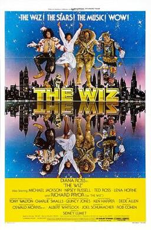

Sidney Lumet
1978
136 minutes
TITLE: The Wiz TEXT PLACEHOLDER 123
You know well what you're getting into here. This is a black version of The Wizard of Oz with a ridiculously star-studded cast that includes Diana Ross, Michael Jackson, Richard Pryor, Nipsey Russell, Lena Horne, Mabel King from What's Happening!!, et cetera. You better have goddamn seen this movie if you ever plan to have any black friends in your life of a certain age who don't think you're some kind of racist or uncultured idiot. This one is basic cultural literacy.
Luckily you have already goddamn seen this, and you have some street cred to boot. Most of your LGBTQ-adjacent theater friends from high school ended up being in a stage production of this musical at your school. It was a good production aside from the absurdity of having an all-white cast. To their credit, they were greatly enthusiastic about the production, and the whiteness of the cast was more about the demographics of the school than any kind of deliberate exclusion.
Okay, maybe don't use that fact as street cred. But you have some familiarity with the songs in this and can recite some of the laugh lines. And the Wicked Witch of the West for you will always be your friend Sara superimposed over Mabel King.
Watch this film, get nostalgic for simpler times, and then ease on down the road.
Time to choose something different: